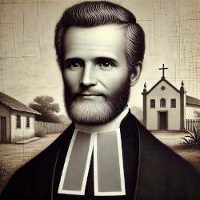

Padre Carlos Maria de Carvalho
Padre Carlos Maria de Carvalho teve um envolvimento significativo com a cidade de Crato, no Ceará, especialmente por sua participação na Revolução Pernambucana de 1817, um movimento que também impactou a região do Cariri, onde o Crato está localizado.
Ele atuava como pároco em Crato, onde desenvolveu forte influência política e social. Quando a Revolução Pernambucana eclodiu, Padre Carlos Maria de Carvalho foi um dos principais líderes locais que aderiram ao movimento revolucionário, trazendo o ideal de independência para o Ceará. Junto a outras figuras importantes, como Barbara de Alencar e seus filhos, o padre ajudou a organizar a insurreição na região, promovendo ideias republicanas e de liberdade contra o domínio colonial português.
Em Crato, ele e os outros revolucionários chegaram a proclamar a independência da região, tornando a cidade um dos centros da rebelião no Ceará. No entanto, o movimento foi reprimido pelas forças imperiais, e Padre Carlos Maria de Carvalho foi preso. Ele foi enviado para o Rio de Janeiro, onde foi julgado e condenado à morte, sendo enforcado em 1817.
No cursinho, Cícero encontrou grandes diferenças entre a religiosidade de Fortaleza e a do vale do Cariri (onde fica a cidade de Crato). Isso se deveu ao fato de que o interior do Ceará sofria com a pouca presença de autoridades eclesiásticas, sobretudo pelo fato de que essas autoridades não estavam dispostas a visitar tais regiões. O jornalista Lira Neto aponta que essa situação criou um problema do ponto de vista do controle realizado pela Santa Sé. Ele afirma que esse vácuo de presença das autoridades católicas deu origem a uma religiosidade espontânea no meio do povo, um misticismo rico em manifestações, mas pouco afeito ao controle e aos rituais da Igreja oficial.
Seu envolvimento com Crato e a Revolução Pernambucana o transformou em uma figura de resistência e luta pela independência, tornando-se um mártir na história do Ceará e do Brasil. Sua atuação na cidade é lembrada como um marco na busca por liberdade e justiça social na região.